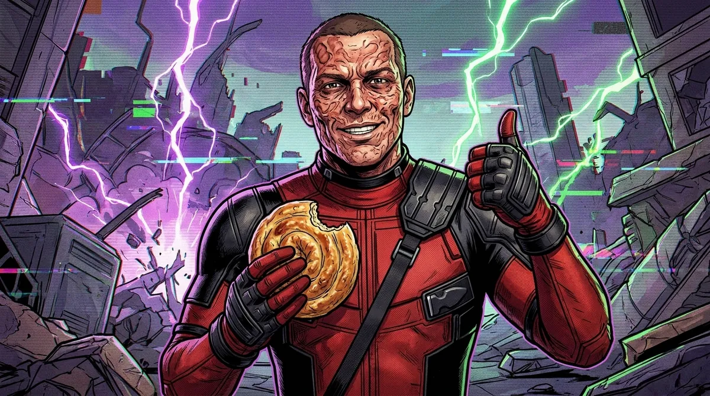

📡 Küldetés-eligazítás

📡 Véd Vilmos: Tisztelt bizottság, a védelem tanúja Nikola Jokić! A 2024–25-ös NBA-alapszakaszban büntetőinek 80,0%-át dobta be. Öt büntetőből tehát pontosan négy megy be. Biztosan. Mr. Szürreál: A bizonyosság hivatali fogalom, kadét. Nagol: A szezon 80%-os arányát a modellben egy dobás \(0{,}8\) siker-valószínűségének vesszük. Hogy ötből pontosan négy menjen be, annak kiszámolható az esélye — és korántsem biztos.
Bernoulli-kísérletsorozat
Sok helyzetben ugyanazt a kísérletet ismételjük meg, és minden alkalommal csak az érdekel, hogy sikerült-e: bement-e a büntető, fej lett-e, hatost dobtunk-e.
📗 Bernoulli-kísérletsorozat
Egy kísérletet \(n\)-szer, egymástól függetlenül ismétlünk; minden alkalom eredményét két csoportba soroljuk: siker vagy kudarc. A siker valószínűsége minden alkalommal ugyanaz, \(p\) (a kudarcé \(1-p\)). A kérdés: mekkora a valószínűsége, hogy pontosan \(k\) siker lesz? (Jakob Bernoulli, 1713)
Három büntető: minden elágazásnál S (siker, \(0{,}8\)) vagy K (kudarc, \(0{,}2\)). A pontosan két sikert adó három ág zöld.
Az ágak mentén szorzunk, mert a dobások függetlenek. Pontosan két siker háromféle sorrendben jöhet: SSK, SKS, KSS — ahány helyre a kudarc kerülhet, \(\binom32=3\). Mindhárom ág valószínűsége \(0{,}8\cdot0{,}8\cdot0{,}2=0{,}128\), tehát \[P(\text{pontosan 2 siker a 3-ból})=3\cdot0{,}8^2\cdot0{,}2=0{,}384.\] A büntetőket függetlennek és azonos \(p\)-jűnek tekintjük — ez modell. A valóságban a fáradtság vagy a meccs állása is számíthat, a modell pontosságát külön adatokkal lehetne ellenőrizni.
A binomiális képlet
📘 Binomiális valószínűség
Egy \(n\) tagú Bernoulli-kísérletsorozatban, ahol a siker valószínűsége \(p\), pontosan \(k\) siker valószínűsége \[P_n(k)=\binom nk p^k(1-p)^{n-k}\qquad(k=0,\,1,\,\ldots,\,n).\] A \(\binom nk\) megszámolja, hányféleképpen lehet a \(k\) siker az \(n\) helyen, a \(p^k(1-p)^{n-k}\) pedig egy ilyen sorrend valószínűsége.
✏️ I.V.H. Akták — Jokić öt büntetője
\(n=5\), \(p=0{,}8\), \(k=4\): \[P_5(4)=\binom54\cdot0{,}8^4\cdot0{,}2=5\cdot0{,}4096\cdot0{,}2=0{,}4096.\] Vagyis az esetek kb. 41%-ában megy be pontosan négy — a többi 59%-ban nem. A teljes eloszlás:
Öt büntetőből pontosan \(k\) bedobás valószínűsége, ha \(p=0{,}8\).
Forrás: Nikola Jokić NBA-alapszakasz statisztikái (Wikipédia, az NBA hivatalos adatai alapján)
Egy másik példa: egy kockával hatszor dobunk. Pontosan két hatos valószínűsége \[P_6(2)=\binom62\left(\frac16\right)^2\left(\frac56\right)^4=15\cdot\frac1{36}\cdot\frac{625}{1296}=\frac{9375}{46\,656}\approx0{,}201.\]
💡 A binomiális tétel visszaköszön
Az összes valószínűség összege \[\sum_{k=0}^{n}\binom nk p^k(1-p)^{n-k}=\bigl(p+(1-p)\bigr)^n=1^n=1\] — ez éppen a binomiális tétel \(a=p\), \(b=1-p\) választással. Innen a név.
⚠️ Véd Vilmos csapda — egy sorrend nem elég
Vilmos így számolt: \(0{,}8^4\cdot0{,}2=0{,}08192\). Ez csak egy sorrend (például SSSSK) valószínűsége; a kimaradó dobás az öt közül bármelyik lehet, ezért még \(\binom54=5\)-tel szorozni kell. És a „80% → biztosan 4 az 5-ből” sem igaz: a 4 a legvalószínűbb eredmény, de csak \(0{,}41\) valószínűséggel.
🎯 Gyors kérdés
Három szabályos érmét dobunk fel. Mekkora a valószínűsége, hogy pontosan két fej lesz?
Legalább, legfeljebb — és mennyire meglepő?
A „legalább” és a „legfeljebb” kérdésekben több \(k\) valószínűségét adjuk össze — vagy az ellentett eseményt számoljuk ki.
✏️ I.V.H. Akták — legalább
Jokić öt büntetőjéből legalább négy megy be: \[P_5(4)+P_5(5)=0{,}4096+0{,}32768=0{,}73728.\]
Egy szerbiai újszülött kb. \(0{,}516\) valószínűséggel fiú (a 2024-es adat, A2). Ha három szülésnél az újszülött neme egymástól független, és mindháromnál ezt a valószínűséget használjuk, legalább egy fiú esélye: \[1-P(\text{egy sem})=1-0{,}484^3\approx1-0{,}113=0{,}887.\]
✏️ I.V.H. Akták — gyanús kocka
Mr. Szürreál kockája tíz dobásból hatszor mutatott hatost. Ha a kocka szabályos, ennek a valószínűsége \[P_{10}(6)=\binom{10}6\left(\frac16\right)^6\left(\frac56\right)^4=\frac{210\cdot625}{60\,466\,176}\approx0{,}0022.\] Szabályos kockánál ez ezer, egyenként tíz dobásból álló sorozatban átlagosan kb. kétszer fordulna elő. Ez önmagában nem bizonyítja, hogy a kocka szabálytalan, de további vizsgálatra ad okot: a valószínűség segít eldönteni, mennyire meglepő egy megfigyelt eredmény.
🎯 Gyors kérdés
Egy kockával hatszor dobunk. Mekkora a valószínűsége, hogy legalább egy hatos lesz?
⚔️ Az ötösért: „legalább \(k\)” siker egy Bernoulli-kísérletsorozatban — Zsoldos-lista, nehéz 2.
Gyakorolj! Válaszd ki a bevetésed:

📡 Nagol: Eddig azt kérdeztük, mekkora egy esemény valószínűsége. A következő lépés: minden kimenetelhez egy számot rendelünk — hány büntető ment be, mennyit nyerünk —, és azt kérdezzük, mit várhatunk átlagosan. Mr. Szürreál: Az I.V.H.-nak éppen van egy ajánlata.